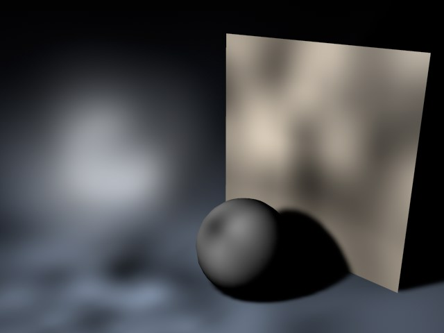
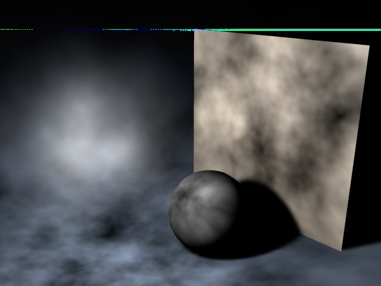
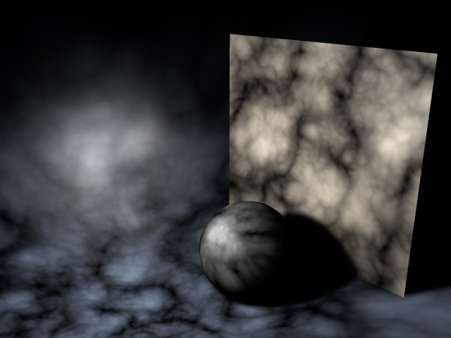
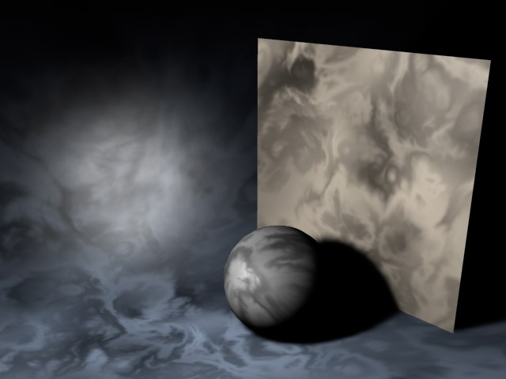

Noise
Effects such as animated fog or sun flares can be achieved using this feature without having to use potentially time consuming volume shaders. However, keep in mind that lights with a noise effect have a small price to pay in rendering time, as any light using the Noise feature is slower to calculate than one without.
You can add irregularities to your light source in order to give it a realistic appearance. A light’s illuminated surface is very rarely evenly lit — particularly if dust or small particles are present.
This option adds irregularities not to your lit surface, but to the visible light itself. For example, you can simulate rolling fog that is visible in the light cone.
Ensures that both the basic light and any visible light are provided with noise irregularities.

Chose from four types, including three types of turbulence that produce cloud-like effects.
Noise produces dark and bright areas.
| Noise

|
Soft Turbulence
 |
| Hard Turbulence
 |
Wavy Turbulence
 |
Only relevant for the Turbulence types above. The Octaves value determines the graininess of the noise. The higher the value, the grittier the appearance.
Sets the speed of the irregularities.
Using this you can raise the overall brightness of the irregularities. You can enter a negative percentage to reduce the brightness.
Higher values increase the contrast of the noise, lower values reduce it.
Enabling this option ensures that the local coordinates of the light source are nailed down. If the light source is moved now, the turbulence/noise will move also. For normal use, leave this option disabled, since dust and particles in the real world move due to the forces of nature, not simply because the light itself moves.
The illumination noise is always local to the light’s coordinates. The visible noise can be made global to the scene by unchecking the box.
These values determine the size of the irregularities in the X, Y and Z directions in relation to the scene’s absolute Cartesian coordinates. If the noise effect is too severe, try reducing these values.
Use this setting to define the size of the noise on lit objects. Lower values will result in rough noise, larger values will result in finer noise.
Wind [XYZ m]
Wind Velocity [0..+∞m]
Here you define the wind properties for the noise, This will add realism to the animation since wind will appear to blow the dust.
The three Wind values define the vectors of the wind direction in absolute Cartesian coordinates (and/or local coordinates if the Local option is enabled). Use the Wind Velocity value to change the wind’s strength.